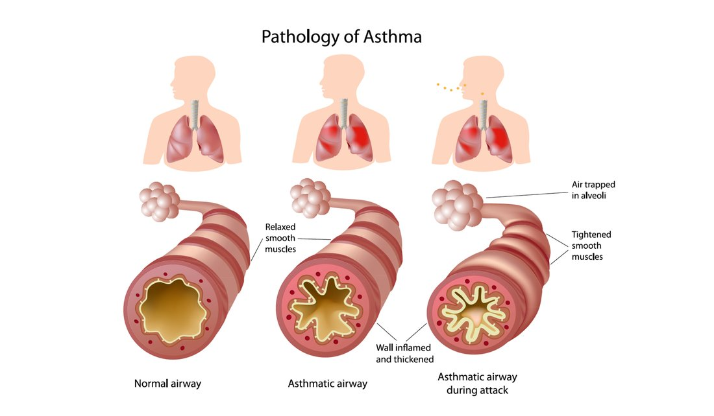
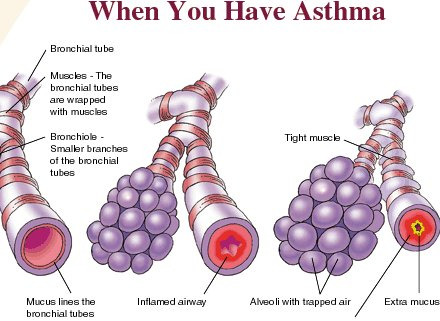
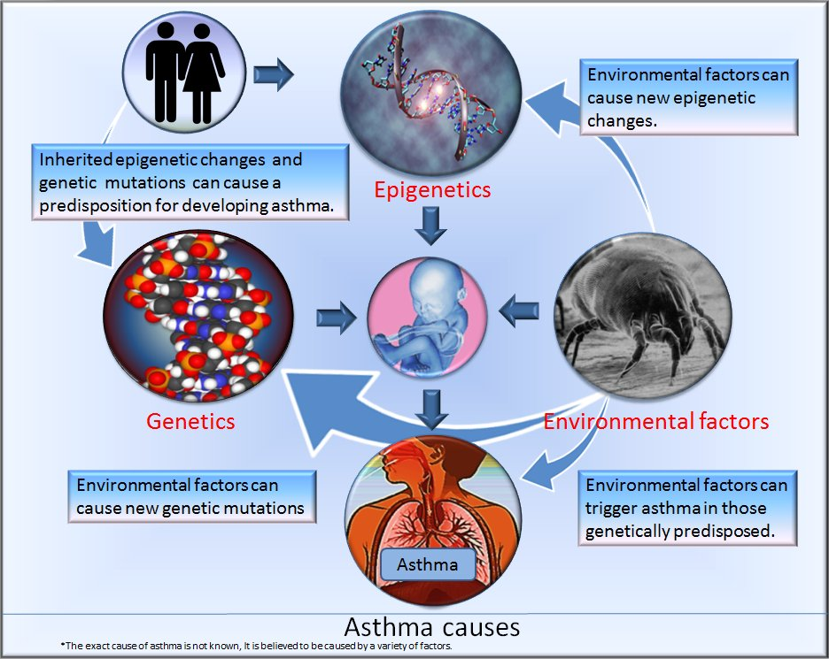
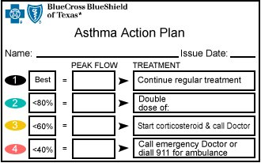
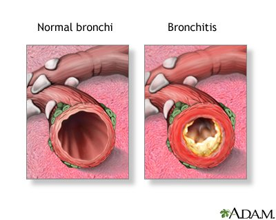
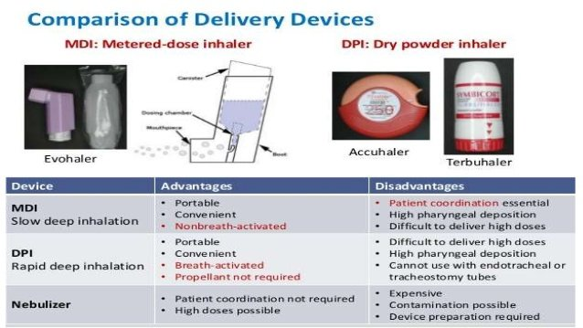
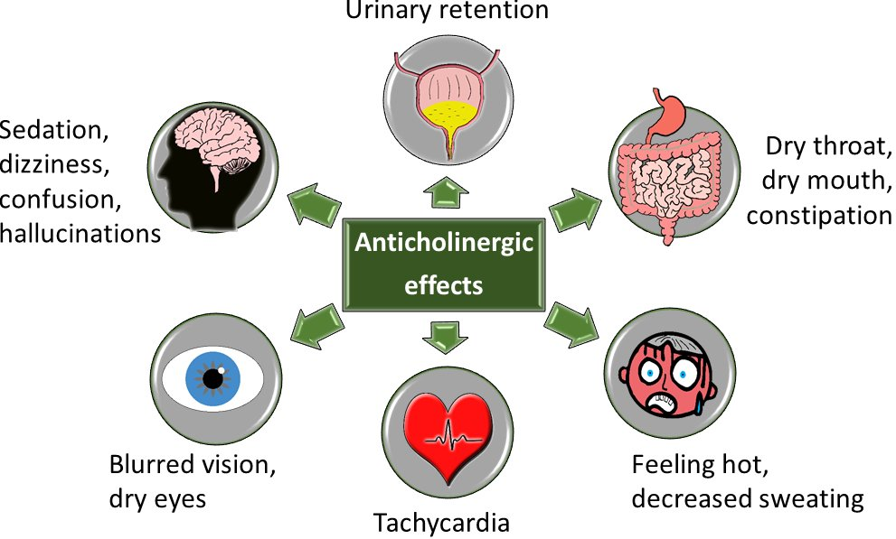

Week 2
Obstructive Airway Disorders
Obstructive Disease Basics
Why Air Gets Trapped
- Narrowed airways make obstruction worse on expiration — air gets trapped in the lungs because it can't get out.
- This increases the work of breathing and slows lung emptying, measured with FEV1 (forced expiratory volume in 1 second) on pulmonary function tests (PFTs).
- All obstructive diseases cause a V/Q (ventilation-perfusion) mismatch — air and blood in the lungs aren't matched up well, so blood isn't oxygenated properly, leading to hypoxemia.
- Trapped air also means less effective ventilation, so CO2 builds up — hypoventilation and hypercapnia.
- Assessed with an ABG or VBG, exhaled CO2/capnography, and SpO2.
Dyspnea and wheezing (from inflamed airways) are hallmark findings across all three obstructive diseases. Hyperinflation from air trapping shows up on a chest X-ray.
Asthma
| Term | Detail |
|---|---|
| Definition | Chronic inflammation of the bronchial airways — not the alveoli. That's what separates asthma from chronic bronchitis and emphysema. |
| Airflow Obstruction | Bronchial hyperresponsiveness causes bronchoconstriction and variable airflow obstruction — but unlike bronchitis and emphysema, it's mostly reversible. |
| Risk Factors | Usually a childhood-onset disease; strongly linked to allergies and a significant familial component (100+ implicated genes). Also: heavy allergen exposure, urban living, indoor/outdoor air pollution, tobacco smoke exposure, viral respiratory infections, GERD, and reduced early exposure to infectious organisms. |
| Common Triggers | Exercise/exertion is the most common trigger, plus secondhand smoke, climate, dust mites, pet dander, and pollen. |
Asthma Pathophysiology, Step by Step
- Exposure to a trigger/antigen activates an intense immune response — mast cells, eosinophils, neutrophils, basophils, T-helper cells, and B lymphocytes are all recruited.
- This causes bronchial airway inflammation.
- Inflammation leads to mucus hypersecretion, smooth muscle constriction (narrowing the airway), and swelling.
- Result: wheezing, cough, shortness of breath, chest tightness, and an increased work of breathing.



There's an early and a late asthmatic response. The early response is immediate — inflammatory mediators cause vasodilation, capillary permeability, edema, bronchoconstriction, and mucus. A late response can follow about 48 hours later, as the recruited white blood cells trigger a second wave of the same process. Teaching point: a patient who had a reaction earlier in the day is at high risk again later that same day — keep rescue medication nearby.
Repeated, untreated exacerbations lead to airway remodeling — irreversible long-term damage that becomes chronic asthma. Bronchoconstriction is what causes the acute dyspnea, but inflammation is what drives the long-term severity and remodeling.
| Term | Detail |
|---|---|
| Diagnosis | History (childhood allergies, wheezing episodes, exercise intolerance) plus PFTs — the gold standard. Look for a decreased expiratory flow rate and decreased FEV1. Often mistaken for heart failure, cystic fibrosis, or vocal cord dysfunction, so a specialist should confirm it. |
| Classic Symptoms | Wheezing, dyspnea, cough, chest tightness. |
| Severe Attack | Accessory muscle use, distant or decreased/absent breath sounds, diaphoresis, inability to speak — can progress to a silent chest and respiratory failure. Asthma attacks can be fatal. |
Asthma Management Overview
- Avoid known triggers.
- Monitor with a peak flow meter (tracks FEV1 at home) and an asthma action plan built around green/yellow/red zones based on the patient's personal best.
- PO corticosteroids are the mainstay for exacerbations; a short-acting beta agonist inhaler covers milder forms.
- More severe disease adds anti-inflammatory therapy — inhaled corticosteroids, long-acting beta agonists, or leukotriene antagonists (full drug detail in the Pharmacology sections below).
- Immunotherapy — allergy shots or monoclonal antibody therapy — is an option too.

Chronic Bronchitis
| Term | Detail |
|---|---|
| Definition | Hypersecretion of mucus with a chronic productive cough, present for at least 3 months of the year for at least 2 consecutive years — typically worse in winter. Timing is what makes the diagnosis. |
| Cause | About 90% of patients with chronic bronchitis smoke cigarettes. Smoking and vaping together carry a 6x greater risk. |
| Airflow Obstruction | Present — unlike acute/simple bronchitis. This is what classifies chronic bronchitis as a form of COPD. |
| Hallmark Sign | A persistent, productive cough — purulent if a respiratory infection is also present. These patients are more prone to respiratory infections because the mucus becomes a breeding ground. |
| Diagnosis | History, physical exam, chest imaging, and PFTs — decreased expiratory volume from the airflow obstruction. |
| Reversibility | By the time most patients seek treatment, the airway changes are usually irreversible. |
Chronic Bronchitis Pathophysiology, Step by Step
- Inhaled irritants cause airway inflammation and white blood cell infiltration of the bronchial walls.
- This drives mucus production, inflammation, and bronchial edema.
- Goblet cells respond by getting both bigger and more numerous (hyperplasia) — producing more thick, tenacious mucus.
- Smoking damages ciliary function, so that mucus can't be cleared effectively.
- The accumulation leads to chronic bronchospasm and, over time, pulmonary fibrosis.
Late in the disease, this can progress to pulmonary hypertension — causing syncope, dyspnea, and fatigue — and eventually right-sided heart failure, also called cor pulmonale.
Smoking cessation can halt progression, but it doesn't reverse or cure the damage already done. Management includes bronchodilators, mucus thinners/expectorants, prophylactic antibiotics during certain times of year, chest physiotherapy, and corticosteroids later in the disease or during exacerbations. Acute exacerbations typically need antibiotics and corticosteroids together; severe cases may need mechanical ventilation. Home O2 therapy is common.

Emphysema & the COPD Umbrella
| Term | Detail |
|---|---|
| Definition | Permanent enlargement of the airspaces distal to the terminal bronchioles, with destruction of the alveolar walls. |
| Cause of Obstruction | Inflammation and loss of elastic recoil — not mucus production, which is what makes chronic bronchitis different. |
| Mechanism | An imbalance between proteases/antiproteases, plus oxidative stress and apoptosis, breaks down elastin and destroys alveoli — creating blebs/bullae that can't perform gas exchange. |
| Major Risk Factors | Smoking is the primary cause, plus secondhand smoke, air pollution, and frequent childhood respiratory infections. |
| Genetic Form | Alpha-1 antitrypsin deficiency — under 2% of cases. Suspect this in a patient with emphysema who has never smoked. |
| Diagnosis | PFTs (decreased FEV1); chest X-ray (hyperinflated lungs); ABG (respiratory acidosis — high CO2, low pH); alpha-1 antitrypsin level if there's no smoking history. |
Classic Presentation
- Gradually increasing dyspnea on exertion, eventually progressing to dyspnea at rest, with a prolonged expiratory phase. Often oxygen-dependent.
- Malnutrition and muscle wasting — breathing becomes the body's whole priority, so other needs get pushed aside.
- Barrel chest (a roughly 1:1 AP diameter) from chronic hyperinflation.
- Pursed-lip breathing — provides positive pressure that helps keep airways open.
- Quiet, diminished breath sounds are the hallmark finding.
"Blue Bloater" — Chronic Bronchitis
- Tends to be more overweight
- More cyanotic
- More edema
- More wheezing
- May have an elevated hemoglobin
- More hypoxic overall
"Pink Puffer" — Emphysema
- Tends to be more malnourished/thin
- Quiet, diminished breath sounds
- Pursed-lip breathing
- Barrel chest
- More hypercapnic and dyspneic overall
COPD (chronic obstructive pulmonary disease) is the umbrella term for chronic bronchitis and emphysema together — both cause trouble getting air out.
Management: smoking cessation, bronchodilators, anti-inflammatory agents, home oxygen, and breathing/relaxation techniques. Infection prevention matters a lot here — early broad-spectrum antibiotics are often started at the first sign of infection, since additional airway stress on top of already-damaged airways is dangerous for these patients.
Bronchodilators — Beta Agonists
Two big pharmacology classes treat these three diseases: bronchodilators (relax bronchial smooth muscle) and anti-inflammatories (reduce bronchial inflammation). Either class can be used across asthma, chronic bronchitis, or emphysema, though some agents are more disease-specific.
Short-Acting (SABA)
- Albuterol, levalbuterol.
- Rescue drugs — onset within minutes, lasting about 4–6 hours; given every 4–6 hours.
- First-line treatment for an acute asthma attack; treats acute bronchospasm, wheezing, chest tightness, and shortness of breath from asthma, chronic bronchitis, or emphysema.
- Using more than one canister a month signals inadequate asthma control and may mean adding anti-inflammatory therapy (there are about 200 puffs per inhaler).
- Also used prophylactically before exercise for exercise-induced asthma — but not recommended for regular daily use.
Long-Acting (LABA)
- Salmeterol, formoterol.
- Preventer/maintenance drugs — will not help an acute attack. Lasts 12–24 hours, usually dosed twice daily (often by DPI).
- Always given combined with an inhaled corticosteroid — never alone.
- Historically linked to increased asthma-related deaths, more so in Black and African American patients — used to carry a black-box warning, later removed after further study.
- Used for moderate-to-severe asthma or worsening COPD.
| Term | Detail |
|---|---|
| Selective (Beta-2) | Albuterol, salmeterol — act only on beta-2 receptors in the lungs. This is what's preferred for pulmonary conditions, since it limits systemic effects. |
| Non-Selective | Epinephrine, metaproterenol — also stimulate beta-1 (cardiac effects: increased HR and BP) and alpha receptors (vasoconstriction, decreased mucosal edema/secretions). More systemic side effects overall. |
Beta Agonist Cautions & Side Effects
- Use cautiously with uncontrolled hypertension, cardiac rhythm problems, or high stroke risk.
- Avoid combining with MAOIs or other sympathomimetics (ephedrine, pseudoephedrine) — risk of hypertension.
- Can raise blood glucose — patients may need more insulin during frequent or exacerbation-driven use.
- Common side effects: insomnia, restlessness, anorexia, increased heart rate (PVCs/PACs), tremors, headache.
- Overdose risk: paradoxical bronchospasm — can be reversed with a beta blocker if truly needed, used cautiously.
Delivery is mostly inhaled to minimize systemic effects. MDI (metered dose inhaler) is not breath-activated and takes a slow, deep inhale technique; DPI (dry powder inhaler) is breath-activated and generally easier for children or patients with cognitive limitations. Nebulizers are common in the hospital, especially for acute exacerbations.

Bronchodilators — Anticholinergics & Xanthine Derivatives
| Term | Detail |
|---|---|
| Anticholinergics | Ipratropium is the main one. Blocking acetylcholine inhibits the parasympathetic nervous system, shifting toward sympathetic tone — bronchodilation, less mucus production. A prophylactic (daily) drug, not a rescue drug. Often combined with albuterol (Combivent, DuoNeb); given several times daily or once daily depending on the formulation. |
| Xanthine Derivatives (Methylxanthines) | Theophylline, aminophylline. Inhibit phosphodiesterase, raising cAMP — which relaxes smooth muscle and blocks IgE-mediated release of allergic mediators, producing bronchodilation. Second-line, tried after other bronchodilator classes, because of a high risk of toxicity and drug interactions. Not a rescue drug. Theophylline is metabolized to caffeine, producing mild CNS stimulation and boosting respiratory drive. |

| Term | Detail |
|---|---|
| Toxicity Signs | Insomnia, headache, tachycardia, dysrhythmias, seizures — distinct from the common side effects of nausea, vomiting, and decreased appetite. |
| Contraindications | Dysrhythmias, seizure disorders, hyperthyroidism, peptic ulcers. |
| Monitoring | Narrow therapeutic index — serum theophylline levels are monitored closely. Toxicity is treated with activated charcoal. |
| Smoking Interaction | Smoking decreases theophylline absorption. If a patient on theophylline quits smoking, the dose may need to be decreased and levels monitored more closely. |
| Other Cautions | Avoid caffeine (additive effect). Xanthine derivatives have many drug interactions overall — important to communicate clearly about who is taking one. |
Anti-Inflammatory & Add-On Therapies
| Term | Detail |
|---|---|
| Leukotriene Receptor Antagonists | Montelukast (Singulair, age 12 months+), zafirlukast (age 5+). Block leukotriene receptors on immune cells in the lungs, preventing inflammation, bronchoconstriction, and mucus production. Given PO (chewable tablets or granules available for kids); improvement seen in about a week. Used for prophylaxis and chronic treatment of asthma, and for allergies — not for acute attacks. Side effects: headache, nausea, dizziness, insomnia, diarrhea. Montelukast has few drug interactions; zafirlukast has more. |
| Inhaled Corticosteroids | Beclomethasone, budesonide, fluticasone. Fewer systemic side effects than PO corticosteroids (which cover acute exacerbations instead). Not a rescue drug — for prevention and long-term maintenance; takes several weeks of continuous use for full effect. Give the bronchodilator first, then the inhaled steroid, for better absorption. Often combined with a LABA for moderate-to-severe disease — budesonide/formoterol (Symbicort) or fluticasone/salmeterol (Advair) — still not for acute attacks. Side effects: pharyngeal/mouth irritation, cough, dry mouth, and a higher risk of oral candidiasis — rinse the mouth out after each use. |
| Mast Cell Stabilizers | Cromolyn is the only one. Stabilizes mast cell membranes and prevents the release of bronchoconstrictive, inflammatory substances. Used for prevention — taken 15–20 minutes before a known trigger. Not a rescue drug, but useful situationally before expected exposure. |
Newer Add-On Therapies
- Omalizumab — a monoclonal antibody that binds IgE, limiting the release of allergic mediators and reducing airway hyperresponsiveness. Asthma-specific; always an add-on, never given alone. Given by injection.
- Roflumilast — a selective PDE4 inhibitor with potent anti-inflammatory effects in the lungs. Used for COPD exacerbation prevention, not acute treatment; given orally; works best for chronic bronchitis with a history of frequent exacerbations. Not a bronchodilator. Side effects: nausea, vomiting, diarrhea, headache, muscle spasms, decreased appetite, tremors.
Rescue vs. Long-Term Control, Summarized
- Long-term control (preventers): anticholinergics, xanthine derivatives, inhaled corticosteroids, leukotriene receptor antagonists, mast cell stabilizers, long-acting beta agonists.
- Rescue (quick relief): short-acting beta agonists — albuterol. If a patient suddenly can't breathe and is wheezing, albuterol is the only right answer.
Self-Test Flashcards
Click a card to flip it and check your answer.